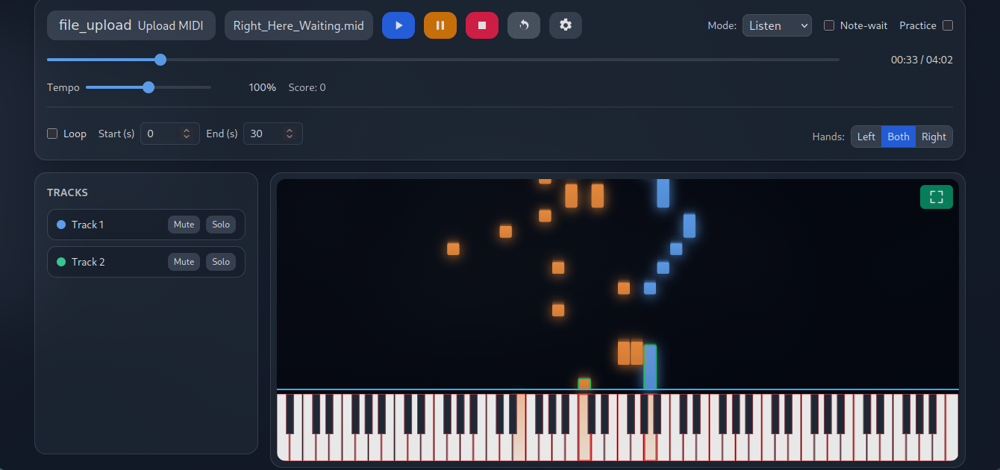
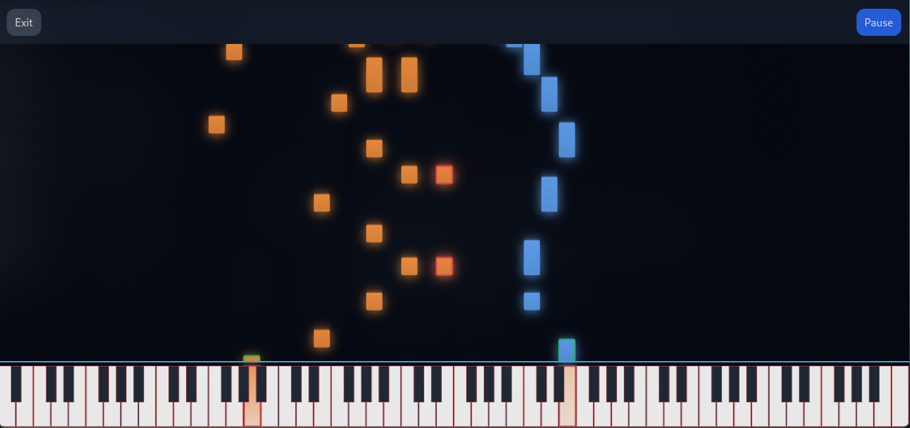
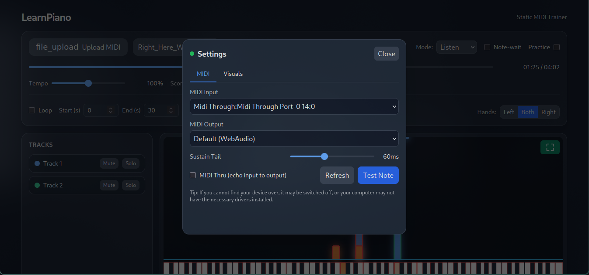

Connect your keyboard, follow falling notes, and get instant feedback. Practice with note‑wait, hand isolation, tempo & loop control, and progress tracking - right in your browser.

Four simple steps to your first song.
Use any USB‑MIDI or Bluetooth‑MIDI device (desktop browsers).
Load any .mid file. Your last song auto‑loads next time.
Keys highlight as you play for instant feedback.
See accuracy, timing, and missed notes after each run.
Playback pauses before the next notes until you play them.
Practice left, right, or both hands with personalized parts.
Slow down, loop tricky sections, and build muscle memory.
Use any MIDI keyboard and optionally send notes to external gear.
See accuracy and timing to focus your practice.
Clean piano roll with glowing keys and crisp hit line.


Open the app, load a MIDI, and start learning with real‑time visual guidance.